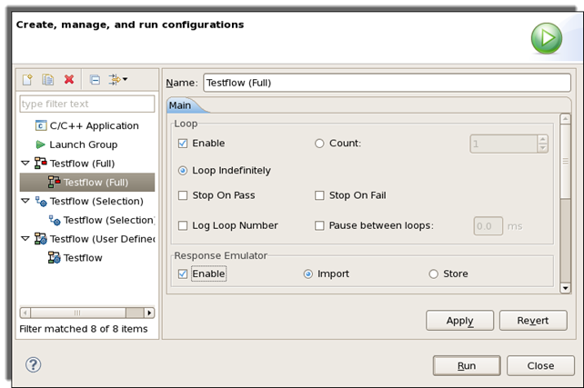
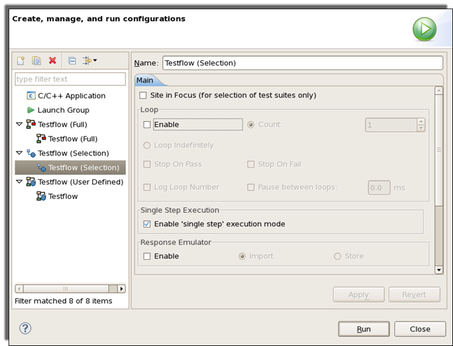
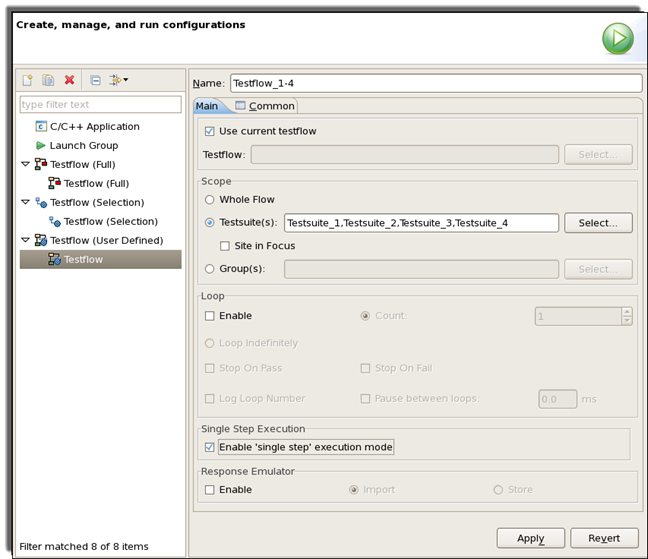
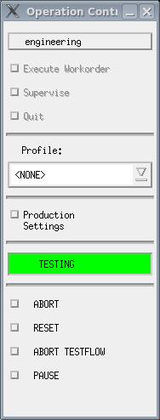

Running a testflow
The Testflow tool allows you to directly run the entire testflow or one or more individual test suites from it, which is useful when debugging the testflow, or when integrating new test suites into the testflow.
About this task
You can also run the testflow or individual test suites in a loop that stops when a specified condition is met. This feature is useful in test program debugging and development.
Before you begin
Make sure the testflow has been loaded.
Procedures
Step 1: Set the flags
To output the result to the report window, set the debug_mode testflow flag to any value except off on the Flags page.
Step 2: Set the configuration of the testflow execution
The configuration is set in the Run dialog. To open this dialog, in the SmarTest Work Center, choose .
To run a full testflow
- In the Run configurations dialog, select Testflow (Full) from the left list. Then you can set the configuration of the whole testflow execution on the right side.
- If you want to run the testflow in a loop, specify the loop parameters in the
Loop area:
- Select the Enable checkbox.
- If you want to run the loop a limited number of times, choose the Count option and enter an integer number. The testflow will be executed for the specified number of times.
- If you want to run the loop until a certain condition is reached, click Loop Indefinitely. The testflow will be executed until you give an Abort command (in the Operation Control window), or until the Stop On Fail or Stop On Pass conditions are met (if you activate the respective checkboxes, as described below).
- To run the testflow until a fail bin is reached, select the Stop On Fail checkbox.
- To run the testflow until there is a loop iteration in which all tests pass, select the Stop On Pass checkbox.
- If you want to display the loop number in the report window, select the Log Loop Number checkbox.
- If you want to add a wait time between consecutive loop executions, select the
Pause between loops: checkbox. In the text box next to it, specify a
time interval in millisecond (ms).

- If you use Response Emulator, set the options in the Response Emulator area. For details, see Preparing the Hardware Response files and Using hardware response files for execution
To run selected test suites
You can also set how to run the selected test suites in the testflow.
- In the Run dialog, select Testflow (Selection)
from the left list. Then you can set the configuration of the selected testflow execution on
the right side.

- Select the Site in Focus checkbox if you want to run the selected
test suites on the focus site. If this checkbox is cleared, the selected test suites are
executed on all active sites.Note Refer to the paragraph When you run test suites with their sub-branches further down in this topic.
- The configuration of the Loop area and the Response Emulator area is same as that of the full testflow execution. See the section "To run a full testflow".
- Select Enable 'single step' execution mode for testflow debugging, see Single step testflow debugging.
To run a user-defined testflow
In the Run dialog, you can create a new testflow and then execute it.
- In the Run dialog, right-click Testflow (User Defined) in the left list and select New. A node named "Testflow" is created.
- Click the newly created node, then you can set the configuration for the user defined
testflow on the right side.

- Enter a string in the Name text box, the default name is Testflow. It is used to identify your configuration for running the user defined testflow.
- Select a testflow.
- To select the current testflow, select the Use current testflow checkbox.
- To select another testflow in the directory
device_directory/testflow, clear the Use current testflow checkbox and click Select to choose the testflow you want to execute.
- Set the Scope area to create a testflow based on the selected testflow.
- Whole Flow: The entire current testflow will be executed.
- Testsuite(s): A sequence of the test suites will be executed. Click
the Select button, the Select Testsuites window
opens, where you can select the test suites and define their execution order.
Select the Site in Focus checkbox if you want to run the test suites on the focus site. If this checkbox is cleared, the test suites are executed on all active sites.
- Group(s): You can execute specific groups of the testflow. Click the Select button. The Select Groups window opens, where you can select the groups and define their execution order.
- Select Enable 'single step' execution mode for testflow debugging, see Single step testflow debugging.
- The configuration of the Loop area and the Response Emulator area is same as that of the full testflow execution. See the section "To run a full testflow".
- You may add the testflow to the Run menu, see Adding user defined testflows to the Run menu.
Step 3: Run a testflow
After you have set the configuration in the Run dialog, keep the dialog open, click Run.
You can also run the whole testflow and the selected test suites when the Run dialog is closed:
- To run the entire current testflow, right-click the Flow Sequence Editor and select Run Testflow.
- To run the selected test suites, right-click the Flow Sequence Editor and select Run Selected.
Results
The results of the testflow are displayed in the report window.
In the Flow Sequence Editor, the passed test suite nodes are green, the failed nodes are red, and the bypassed nodes are yellow.
On the Test Suites page, the cell of the executed test suites change colors.
Green background |
Passed test suite |
Red background |
Failed test suite |
Green border |
The test suite set to pass |
Red border |
The test suite set to fail |
Yellow border |
The test suite set to bypass |
If you edit the testflow after the execution, the borders of all test suites become dashed lines.
For multisite testing, if the Test Suites page is set to show the results of all sites, the Test Suite Name cell is green only when all sites pass. If one site fails, this cell is displayed with red borders.
If the Test Suites page is set to show the results of the site in focus only, the test suite border changes color according to the result of the site in focus. Passed test suites are displayed with green borders and failed test suites are displayed with red borders, irrespective of the results of the sites not in focus.
When you run test suites without their sub-branches
If the test suites are selected without their sub-branches (it is a narrow selection as explained in Narrow selection and wide selection), they are executed based on the current status. That is, the execution of each test suite is affected by the result from the previously executed test suite.
Running the test suites without their sub-branches, if a pattern master file is selected for the testflow, only the used patterns are loaded.
If a sequencer SmarTest Work Center occurs in any test suite, that particular test suite is regarded as having failed.
When you run test suites with their sub-branches
If any one of the chosen test suites is selected together with its sub-branches (it is a wide selection as explained in Narrow selection and wide selection), the selected test suites are constituted as a temporary testflow. Actually this testflow is executed.
Running a wide selection behaves like running a testflow but ignores binning.
When you run a testflow or individual test suites in a loop
If you run a testflow in a loop by setting the parameters in the Loop area of the Run dialog accordingly, the testflow is run in a similar way to a normal, non-looping execution. Any multisite configurations are used, with each loop iteration being executed on all active sites. Reporting and binning is the same as for normal testing. The testflow variables and user flags are not reset at the end of each loop execution; they are only reset when the loop execution is first started, on the first loop iteration.
What to do next
To stop the testflow execution, click ABORT in the Operator Control window. (This button is available during the execution of a testflow or test suite.)
 |
The Operator Control window is opened automatically when SmarTest is started. The four buttons ABORT, RESET, ABORT TESTFLOW, and PAUSE are shown if a testflow is running. The functionality of the buttons is as follows:
|
The following procedure has to be followed for a clean abortion of a looped test:
- Click the PAUSE button and wait until the end of the execution.
- Click the ABORT button.
- Return to the PAUSE dialog window and press the
Quit button.Note The Break button (stop sign) does not abort the loop execution.
Functional changes
- Introduced before SmarTest 6.3.2
- SmarTest 6.5.3: The procedure of running a testflow is changed.
- SmarTest 7.1.0: Single step execution mode for debugging testflows introduced
- SmarTest 7.1.2: Stop on Fail now stops when any test suite in a sequence has an overall fail result and Stop on Pass now stops when all of the test suites in a sequence pass.
- SmarTest 7.4.1: For Testflow (Full), Testflow (Selection) and Testflow (User Defined), a new option "Pause between loops" allows user to specify a wait time between consecutive executions.